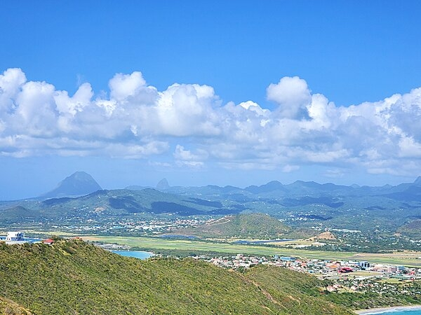

Saint Lucia's Pidgeon Island is connected to the mainland by a man-made causeway. Image obtained from CIA World Factbook.
Introduction
Background
The island, with its fine natural harbor at Castries and burgeoning sugar industry, was contested by England and France throughout the 17th and early 18th centuries (changing possession 14 times); it was finally ceded to the U.K. in and became part of the British Windward Islands colony. Even after the abolition of slavery on its plantations in , Saint Lucia remained an agricultural island, dedicated to producing tropical commodity crops.
In the mid-20th century, Saint Lucia joined the West Indies Federation (–) and in became one of the six members of the West Indies Associated States, with internal self-government. In , Saint Lucia gained full independence.

Town of Vieux Fort with The Twin Pitons, the airport, in the distance. Image obtained from CIA World Factbook.
Government
Country Name
Conventional long form: none
Conventional short form: Saint Lucia
Etymology: named after Saint Lucy of Syracuse by French sailors who were shipwrecked ont he island on , the saint's feast day' Saint Lucia is the only country named specifically after a woman
Note: pronounced saynt-looshuh
Government Type
parliamentary democracy under a constitutional monarchy
a Commonwealth realm
Independence
People and Society
Languages
English (official)
Saint Lucian Creole
Total fertility rate
1.72 children born/woman ( est.)
Comparison ranking: 158
Population distribution
most of the population is found on the periphery of the island, with a larger concentration in the north around the capital of Castries